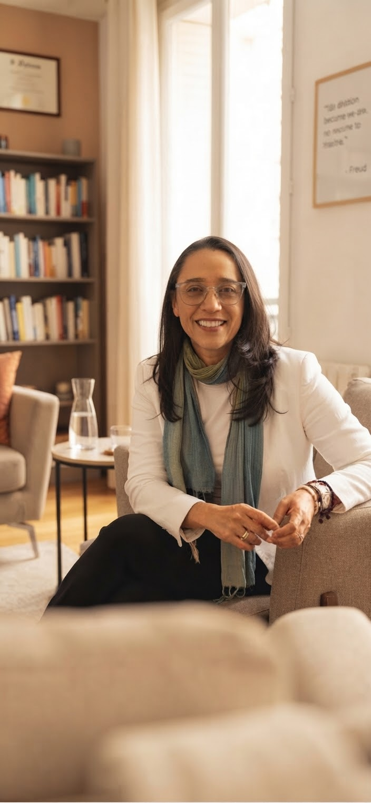

O valor da delicadeza na escuta clínica
Em breve
Às vezes, alguma coisa começa a pesar, se repetir ou simplesmente deixar de fazer sentido — mesmo quando, por fora, parece estar tudo bem.
Você não precisa chegar sabendo exatamente o que dizer.

Você não precisa estar “muito mal” para começar uma análise. Às vezes, o que leva alguém a procurar escuta é justamente a sensação de que alguma coisa não está encontrando um lugar.
Se você se reconhece em alguma coisa acima, isso pode ser motivo suficiente para começar uma análise.
Sobre mim
Sou Carolina de Azevedo, psicanalista, e trabalho exclusivamente com atendimento online. Durante parte da minha trajetória profissional, também trabalhei presencialmente, e essa experiência me ensinou que a qualidade de um encontro depende muito mais da presença construída entre duas pessoas do que das paredes que as cercam.
Meu trabalho é inspirado especialmente pelas contribuições de Sándor Ferenczi, pela importância que dá ao vínculo, à sensibilidade e à experiência subjetiva de cada pessoa.
Recebo adultos que desejam compreender melhor seus sintomas, repetições, conflitos, relações e aquilo que, muitas vezes, ainda não conseguem nomear.
Formação em Psicanálise pelo CEP — Centro de Estudos Psicanalíticos.
Minha formação e minha experiência profissional também passaram por outros caminhos. Durante muitos anos, trabalhei com comércio exterior e negociações internacionais, no Brasil e no exterior, experiência que me levou a viver diferentes contextos profissionais e culturais.
Mais tarde, esse percurso ganhou outro sentido quando a psicanálise passou a ocupar um lugar central na minha vida. A formação pelo Centro de Estudos Psicanalíticos marcou uma mudança de direção, mas não como ruptura com tudo o que veio antes, e sim como uma nova forma de olhar para aquilo que sempre me interessou: as pessoas, suas histórias, seus vínculos e os caminhos que encontram para lidar com o que vivem.
Hoje, dedico-me ao atendimento psicanalítico de adultos, exclusivamente online.

A análise
A psicanálise não oferece fórmulas prontas. O trabalho se constrói a partir do que você traz, das perguntas que aparecem no caminho e também daquilo que, às vezes, ainda não pode ser dito.
Como começar
Nosso primeiro encontro é um espaço para falar sobre você e sobre o que está vivendo. A partir dessa conversa, entenderemos juntos se faz sentido iniciar um trabalho.
As sessões acontecem por videochamada, em um espaço reservado e com privacidade.
A frequência dos encontros é definida de acordo com cada caso e com o trabalho que vamos construindo juntos.
Cada sessão tem duração aproximada de 50 minutos.
Artigos
Em breve
Em breve
Em breve
Se algo do que você leu aqui fez sentido para você, escreva. A primeira conversa pode ser simplesmente isso: um começo.